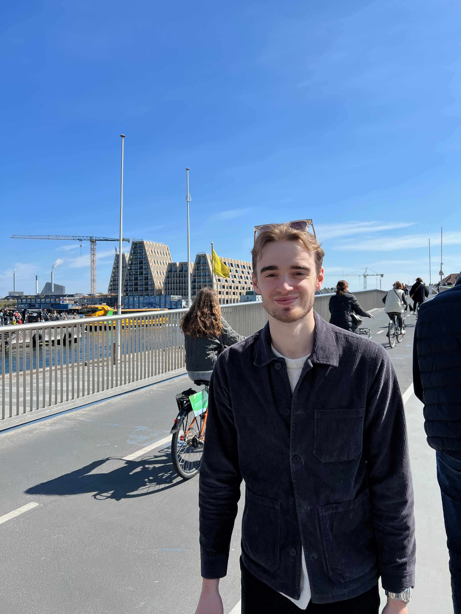

Oskar Tapper

My Resume and Portfolio
Summary:
My name is Oskar and I'm 21 years old. Currently I live in Stockholm and I'm studying a prepatory year at the Royal Technology University to later continue my journey in tech. Three words to describe myself is driven, social and a problem solver.
Education:
- ProCivitas Helsingborg, High School gradutate in Social Science.
Work experience:
- Cashier at Ängelholm outdoor.
July 2017
- Cashier in a kiosk during Ängelholm Outdoor Cup. Worked long hours with high tempo and lot of things to do.
- Salesman at ICA Torekov.
October 2017
- Unpacking of grocceries, helping customers and working colonial.
- Stressful enviorment that demanded flexibilty and effcienty.
- Salesman at ICA Maxi Helsingborg.
June - August 2020
- Unpacking of grocceries, helping customers and working colonial.
- Responsible for the health and beauty department.
- Stressful enviorment that demanded flexibilty and effcienty. The Colonial work demands that you are a quick problem solver.
- Waitress at Mölle Krukmakeri.
June - August 2021
- Serve and treat customers, taking orders and assisting cooking food.
- Very stressful enviorment, many tasks at one time. Being responible for a lot of tables and customers
- Working in the restaurant industry requires you to be
stress resistant, maintains focus during long work shifts, that
you are structured and responsible.
- Dispute Resolution at Klarna.
November - June 2021
- Solving problems between customers and companies.
- Helped the Customer Service department in Spain and Sweden with urgent problems.
- Took great responsibility in my time with tasks and planing.
- The work required stress resistance and being able to work with the people within your team but aswell with other teams at Klarna.
- Took a lot of hard decisions that turned out good.
Skills and Awards:
- Captain of the regional floorball team.
Languages:
- Swedish (Fluently)
- English (Fluently)
- Spanish (Basic)